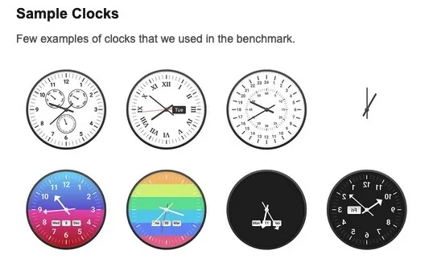

NewsLetter #17
Quando l'IA vince l'oro alle olimpiadi di matematica ma non sa leggere un orologio: le frontiere frastagliate
La distanza tra la medaglia d'oro all'Olimpiade Internazionale di Matematica e la lettura sbagliata di un orologio a lancette
Image Gemini: “Che ore sono?
”Nel luglio del 2025, Gemini Deep Think, il modello sviluppato da Google DeepMind, ha ottenuto 35 punti su 42 possibili alla International Mathematical Olympiad, risolvendo 5 problemi su 6 e raggiungendo la soglia della medaglia d’oro, lavorando in linguaggio naturale, senza supporti simbolici, entro i 270 minuti previsti dal regolamento. È una prestazione che, descritta così, suona come la conferma definitiva di un’intelligenza artificiale che ha ormai superato i confini della competenza umana specialistica nel ragionamento formale. Secondo i dati di marzo 2026 riportati nel ClockBench, benchmark progettato per misurare la capacità di interpretazione percettiva di oggetti quotidiani, il modello con la prestazione più alta su questo compito è GPT-5.4 di OpenAI, con il 50,6% di risposte corrette. Un essere umano di controllo ottiene il 90,1%. Claude Opus 4.6, uno dei sistemi di punta di Anthropic, si ferma all’8,9%. Il dato viene citato nel capitolo dedicato alle prestazioni tecniche dell’AI Index Report 2026, nona edizione, curata da Stanford University Human-Centered Artificial Intelligence

Non si tratta di un aneddoto simpatico da citare in apertura di presentazione.
La distanza tra la medaglia d’oro all’Olimpiade Internazionale di Matematica e la lettura sbagliata di un orologio a lancette è un dato strutturale, e il livello di attenzione che richiede all’AI Officer è proporzionale alla sua profondità.
L’AI Index 2026 introduce il concetto di “jagged intelligence” per descrivere questo profilo irregolare di capacità: una configurazione in cui l’avanzamento non segue un piano uniforme, ma procede per picchi e valli distribuiti su domini apparentemente senza relazione tra loro. Tradotto operativamente, l’immagine più accurata è quella di frontiere multiple, a livelli diversi e in piani diversi, che avanzano contemporaneamente a velocità che cambiano radicalmente a seconda del dominio, della struttura del compito e del contesto di verifica. Il ragionamento matematico formale, l’elaborazione linguistica ad alta precisione e l’inferenza simbolica appartengono a una frontiera che ha già raggiunto o superato la soglia della competenza umana specialistica. La percezione analogica, l’interpretazione contestuale di artefatti fisici della vita quotidiana e la manipolazione spaziale nel mondo reale appartengono a una frontiera distante, su un piano diverso, dove la distanza tra le prestazioni di laboratorio e l’affidabilità pratica rimane ampia e sistematicamente sottovalutata.
Il problema della misurazione si sovrappone a quello delle capacità.
I benchmark progettati per resistere anni vengono saturati in pochi mesi: i tassi di errore su GSM8K, un test di ragionamento matematico che fino a poco tempo fa rappresentava un riferimento affidabile, raggiungono il 42% quando i modelli vengono sottoposti a versioni con distribuzione dei dati modificata, rivelando una fragilità strutturale sotto punteggi aggregati apparentemente solidi. Alla frontiera competitiva, i quattro modelli di punta si concentrano entro 25 punti Elo sulla Arena Leaderboard: una convergenza che segnala la maturità dei sistemi di vertice, ma anche la difficoltà crescente di distinguerli attraverso metriche standard. La convergenza delle prestazioni e l’irregolarità delle capacità coesistono, producendo un paesaggio in cui ci sono meno leader evidenti e molta più complessità strutturale di quanto i ranking aggregati lascino intendere.
Per l’AI Officer, la conseguenza operativa è precisa e deriva direttamente da questo quadro. La decisione di integrare un sistema specifico in un flusso di lavoro istituzionale non può basarsi su classifiche aggregate di prestazione e non può basarsi sulla performance impressionante del sistema su un compito ad alto prestigio simbolico. Un modello che raggiunge la medaglia d’oro alle Olimpiadi Internazionali di Matematica ha dimostrato una capacità cognitiva specifica in un ambiente formale, chiuso, con regole definite e output verificabili in modo univoco. Claude Opus 4.6, sistema di riferimento per l’analisi testuale complessa in numerosi contesti professionali, ottiene l’8,9% su ClockBench: un dato che non riguarda la qualità complessiva del modello, ma segnala con precisione chirurgica dove quella qualità non si estende. Lo stesso sistema applicato a compiti che coinvolgono l’interpretazione visiva di oggetti fisici, la navigazione di contesti amministrativi ambigui o la gestione di comunicazioni istituzionali multilivello può operare a un livello che richiede supervisione umana significativa o correzione sistematica. Le frontiere di capacità della AI sono molteplici, e sono frastagliate: questa è la literacy fondamentale che l’AI Officer deve sviluppare, tradurre in linee guida organizzative e comunicare verso chi decide, e che troppo spesso legge solo la notizia della medaglia d’oro senza aver sentito parlare dell’orologio.
Fonti e letteratura citata
AI Index Report 2026. Stanford University, Human-Centered Artificial Intelligence (HAI). Capitolo 2: Technical Performance, Highlight 7 (”Jagged Intelligence”). https://hai.stanford.edu/ai-index
Dell’Acqua, F., McFowland III, E., Mollick, E.R., Lifshitz-Assaf, H., Kellogg, K.C., Rajendran, S., Krayer, L., Candelon, F. e Lakhani, K.R. (2023). “Navigating the Jagged Technological Frontier: Field Experimental Evidence of the Effects of AI on Knowledge Worker Productivity and Human Skill Development.” Harvard Business School Working Paper 24-013. https://www.hbs.edu/faculty/Pages/item.aspx?num=64700
ClockBench (2026). Benchmark per la valutazione della lettura di orologi analogici da parte di modelli AI multimodali. Dati aggiornati a marzo 2026.
https://clockbench.ai/
Google DeepMind (2025). Annuncio ufficiale sui risultati di Gemini Deep Think alla International Mathematical Olympiad 2025. https://deepmind.google/discover/blog/
Il post illuminante della settimana
Fabrizio Dell’Acqua, Edward McFowland III, Ethan Mollick e colleghi, “Navigating the Jagged Technological Frontier: Field Experimental Evidence of the Effects of AI on Knowledge Worker Productivity and Human Skill Development.” Harvard Business School Working Paper 24-013, 2023.
Questo paper vale la rilettura proprio adesso, a quasi due anni dalla pubblicazione, perché ha introdotto empiricamente il concetto che l’AI Index 2026 eleva a categoria interpretativa dell’intero panorama tecnico. Gli autori hanno condotto un esperimento sul campo con consulenti di Boston Consulting Group, dividendoli in gruppi con accesso differenziale a GPT-4: il risultato non era un miglioramento uniforme delle prestazioni, ma un profilo a denti di sega in cui l’AI elevava drammaticamente le prestazioni nei compiti dentro la frontiera (elaborazione testuale, sintesi, ideazione strutturata) e le degradava, o le rendeva inaffidabili, nei compiti oltre la frontiera (ragionamento situazionale, verifica di dati complessi, valutazione di scenari con alta incertezza). La scoperta più sottile riguarda il rischio di livellamento: i professionisti meno esperti miglioravano tanto quanto quelli più esperti, suggerendo che l’AI può erodere il valore differenziale della competenza accumulata proprio nei contesti in cui quella competenza ha più rilevanza operativa. Il paper non risponde alla domanda su dove passino esattamente queste frontiere, perché per definizione si spostano; indica invece il metodo, ovvero mappare sistematicamente, per ogni contesto d’uso, quali compiti stiano dentro e quali stiano fuori, e trattare quel confine come un oggetto di governo professionale. Per un AI Officer, questa è la bussola più utile disponibile.
Paper: https://www.hbs.edu/faculty/Pages/item.aspx?num=64700